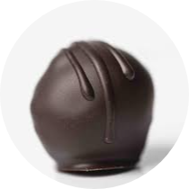

Posted by Catherine
The Mallow Tailor Chocolates
It’s been a while since I’ve done a full-on chocolate review, but when Kate and Janet from
The Mallow Tailor got in touch and asked if I’d like to try some of their filled chocolates,
I couldn’t say no. After all, it’s 2020 and I deserve a little more quality chocolate in my life.
As is often the case, it turns out that saying yes to chocolate was a good decision on my part.
Based in the Brecon Beacons area of South Wales, The Mallow Tailor specialise in beautiful
chocolates filled marshmallow, caramel and fruit ganaches. And as you can see, first impressions
are very good!
Posted by Suzie
Online Mystery Chocolate Tasting With Chocolate Ecstasy Tours
Regular readers will know I’m a big fan of Jennifer Earle’s Chocolate Ecstasy Tours; walking tours of some of London’s best chocolate shops and sweet treat establishments.
Unfortunately, the current pandemic has meant that these tours have had to go on hold, and
Jen has had to look for other ways to keep the spirit of the tours going, while giving a
much needed boost to some of the smaller chocolatiers and chocolate makers who have
struggled during the lockdown period. To that end, she has come up with a couple of great
ideas for finding great chocolate without ever leaving the comfort of your home.
First up, Jen has created a directory of online sellers, an extensive list of small
producers in the UK who are selling sweet treats and baked goods online. It’s a great place
to find a chocolate gift for a loved one or a pick-me-up for yourself!
More recently, she has introduced a new and exciting idea, the Online Mystery Chocolate
Tasting, and she was kind enough to send me a tasting pack for the latest tasting.
Posted by Suzie
Bouvery CV Chocolate Vodka
Back in 2013, I participated in a focus group for a new chocolate liqueur drink. That
product was launched as Baileys Chocolat Luxe later that year, and it was fair to say I
wasn’t a fan of it from the start. Ostensibly a more chocolatey Bailey’s made with ‘Belgian
chocolate’, it turned out not to be especially chocolatey and had an unappetising curdled
appearance when poured.
I personally found Thorntons offering preferable to the the Baileys, but I’ve always felt it
must be possible to do it better. It’s not just a matter of choosing better quality
ingredients – although that certainly goes a long way. The difficult part is getting
chocolate to stay in suspension in a drink with a luxurious and smooth texture.
But with Bouvery CV, a vodka based chocolate drink, it seems someone might have finally
cracked it.
Posted by Catherine
Vanini Organic Uganda Range
Nuts seem to be something of a theme around here at the moment. Hot on the heels of the Amedei
Prendimé range bars I recently reviewed, ICAM sent this colourful looking range from their
Vanini brand.These bars are a little different from the Amedei range though.
The immediately noticeable difference is bean origin. Whereas Amedei make no mention of
origin at all, the Uganda origin of the Vanini bars is celebrated. In fact, ICAM have been
working in Uganda for a number of years, with over 5,000 smallholder farmers directly
supplying the company with beans to the company’s local cocoa collection and processing
facility.
I’m not in a position to judge the ethics or sustainability of one chocolate maker against
another, particularly as I was sent both sets of bars without comment. What I will say is
that as a chocolate consumer, I would much rather know where the beans have come from, so I
can do my own research if I want to.